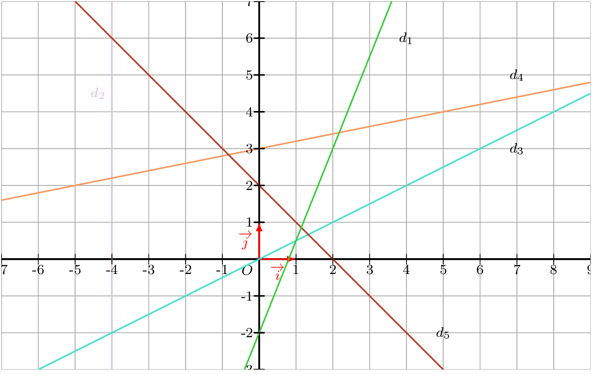
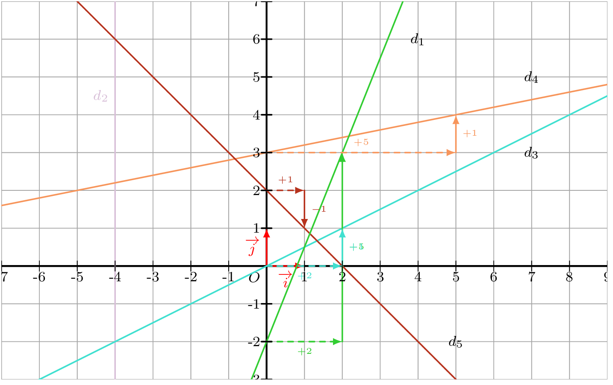

Jour 3 : Fonctions affines, phrases littérales et programmation
Points travaillés :
- Traduire une phrase en une expression algébrique ; simplifier une expression numérique.
- Calculer avec les puissances de 10 ; utiliser l’écriture scientifique.
- Déterminer l’expression d’une fonction affine à partir de conditions données.
- Lire et exécuter un programme Python.
- Utiliser le théorème de Pythagore, la trigonométrie et le théorème de Thalès.
Calcul
Simplifier les expressions suivantes.
- \(A = \dfrac{2}{3} - \dfrac{7}{3} \times \dfrac{1}{3-\dfrac{3}{2}}\)
Afficher la correction :
\(A = \dfrac{2}{3} - \dfrac{7}{3} \times \dfrac{1}{\dfrac{3}{2}} = \dfrac{2}{3} - \dfrac{7}{3} \times \dfrac{2}{3} = \dfrac{2}{3} - \dfrac{14}{9} = \dfrac{6}{9} - \dfrac{14}{9} = -\dfrac{8}{9}\)
- \(B = \dfrac{2}{3} - \dfrac{2}{3} \times \dfrac{5}{14} - 2 \times \dfrac{7}{14}\)
Afficher la correction :
\(B = \dfrac{2}{3} - \dfrac{5}{21} - 1 = \dfrac{14}{21} - \dfrac{5}{21} - \dfrac{21}{21} = \dfrac{14 - 5 - 21}{21} = -\dfrac{12}{21} = -\dfrac{4}{7}\)
Calcul littéral
Traduire chacune des phrases suivantes par une expression algébrique, puis la calculer lorsque c’est possible.
- La somme de 36 et de l’opposé du double de \(x\).
Afficher la correction :
\(36+(-2x)=36-2x\).
- Le quotient de la somme de 3 et 5 par la différence de 6 et le quotient de 2 par 4.
Afficher la correction :
\(\dfrac{3+5}{6-\frac{2}{4}}=\dfrac{8}{6-0{,}5}=\dfrac{8}{5{,}5}=\dfrac{16}{11}\).
- La différence du carré de 7 et du double de 3.
Afficher la correction :
\(7^2-2\times3=49-6=43\).
- Le produit de la somme de \(x\) et 4 par la différence de \(x\) et 4.
Afficher la correction :
\((x+4)(x-4)\), qui se développe en \(x^2-16\).
- La moitié de la somme du carré de \(x\) et de 9.
Afficher la correction :
\(\dfrac{x^2+9}{2}\).
- Le quotient de la différence de \(a\) et \(b\) par la somme de leurs carrés.
Afficher la correction :
\(\dfrac{a-b}{a^2+b^2}\).
Écrire les nombres suivants sous leur forme décimale.
\(a=10^{-3}\) ; \(b=4{,}3\times10^{-2}\) ; \(c=\dfrac{2^5}{10^4}\) ; \(d=5^{-2}\) ; \(e=(-2)^5\) ; \(f=-8{,}324\times10^3\)
Afficher la correction :
\(a=0{,}001\) ; \(\quad b=0{,}043\) ; \(\quad c=\dfrac{32}{10\,000}=0{,}0032\) ; \(\quad d=\dfrac{1}{25}=0{,}04\) ; \(\quad e=-32\) ; \(\quad f=-8\,324\).
Écrire les nombres suivants sous la forme d’une puissance d’un seul nombre.
\(a=5^4\times2^4\) ; \(b=7^4\times 7^{-7}\) ; \(c=\dfrac{5^3}{5^{-7}}\) ; \(d=\dfrac{2^3\times2^7\times2^{-1}}{2^5}\)
Afficher la correction :
\(a=(5\times2)^4=10^4\).
\(b=7^{4-7}=7^{-3}\).
\(c=5^{3-(-7)}=5^{10}\).
\(d=\dfrac{2^{3+7-1}}{2^5}=\dfrac{2^9}{2^5}=2^4\).
Géométrie
ABC est un triangle isocèle de sommet principal A tel que \(AB = 8\) cm et \(BC = 9{,}6\) cm. On appelle respectivement H et K les pieds des hauteurs issues de A et de C.
- Calculer AH puis l’aire du triangle ABC.
Afficher la correction :
Le triangle étant isocèle en A, H est le milieu de \([BC]\) : \(BH=4{,}8\) cm. Dans le triangle ABH rectangle en H, \(AH^2=AB^2-BH^2=64-23{,}04=40{,}96\), donc \(AH=6{,}4\) cm. Aire \(=\dfrac{BC\times AH}{2}=\dfrac{9{,}6\times6{,}4}{2}=30{,}72\) cm\(^2\).
- Calculer CK puis BK.
Afficher la correction :
Aire \(=\dfrac{AB\times CK}{2}\), donc \(30{,}72=4\,CK\), d’où \(CK=7{,}68\) cm. Dans le triangle BKC rectangle en K, \(BK^2=BC^2-CK^2=92{,}16-58{,}9824=33{,}1776\), donc \(BK=5{,}76\) cm.
Sur la figure ci-dessous, qui n’est pas en vraie grandeur, le point \(C\) est le point d’intersection des droites \((BE)\) et \((AD)\), avec \(AC=3\) cm, \(BC=4\) cm, \(AB=5\) cm, \(CD=6\) cm et \(CE=8\) cm.
- Démontrer que le triangle \(ABC\) est rectangle en \(C\).
Afficher la correction :
\(AC^2+BC^2=3^2+4^2=9+16=25=5^2=AB^2\), donc d’après la réciproque du théorème de Pythagore, le triangle \(ABC\) est rectangle en \(C\).
- Calculer l’aire du triangle \(ABC\).
Afficher la correction :
Aire \(=\dfrac{AC\times BC}{2}=\dfrac{3\times4}{2}=6\) cm\(^2\).
- Calculer une valeur approchée au degré près de l’angle \(\widehat{BAC}\).
Afficher la correction :
\(\tan\big(\widehat{BAC}\big)=\dfrac{BC}{AC}=\dfrac{4}{3}\), donc \(\widehat{BAC}\approx53^\circ\).
- Calculer le périmètre du triangle \(CDE\).
Afficher la correction :
\(\dfrac{CA}{CD}=\dfrac{3}{6}=\dfrac{1}{2}=\dfrac{4}{8}=\dfrac{CB}{CE}\), et \(\widehat{ACB}=\widehat{DCE}\) (angles opposés par le sommet), donc les triangles \(ACB\) et \(DCE\) sont semblables dans le rapport \(2\), d’où \(DE=2\times AB=10\) cm. Périmètre de \(CDE=CD+CE+DE=6+8+10=24\) cm.
- Les droites \((AB)\) et \((DE)\) sont-elles parallèles ?
Afficher la correction :
\(\dfrac{CA}{CD}=\dfrac{CB}{CE}=\dfrac{1}{2}\), donc d’après la réciproque du théorème de Thalès, \((AB)\) et \((DE)\) sont parallèles.
Fonctions
- Déterminer l’expression de chacune des fonctions affines dont on donne les représentations graphiques.

Afficher la correction :

En lisant la pente et l’ordonnée à l’origine de chaque droite :
\(d_1 : y = \dfrac{5}{2}x - 2 \qquad d_2 : x = -4 \qquad d_3 : y = \dfrac{1}{2}x \qquad d_4 : y = \dfrac{1}{5}x + 3 \qquad d_5 : y = -x + 2\)
Déterminer dans chacun des cas suivants l’expression de la fonction affine \(f\).
- \(f(2)=4\) et \(f(-2)=5\)
Afficher la correction :
\(f\) est une fonction affine donc \(f(x)=ax+b\).
- Coefficient directeur : \(a = \dfrac{f(2) - f(-2)}{2 - (-2)} = \dfrac{4 - 5}{2 - (-2)} = -\dfrac{1}{4}\).
- Ordonnée à l’origine : \(f(2) = 4 \iff -\dfrac{1}{4} \times 2 + b = 4 \iff -\dfrac{1}{2} + b = 4 \iff b = \dfrac{9}{2}\).
Ainsi, \(f(x) = -\dfrac{1}{4}x + \dfrac{9}{2}\).
- \(f(1)=3\) et \(f(5)=0\)
Afficher la correction :
\(f\) est une fonction affine donc \(f(x)=ax+b\).
- Coefficient directeur : \(a = \dfrac{f(5) - f(1)}{5 - 1} = \dfrac{0 - 3}{4} = -\dfrac{3}{4}\).
- Ordonnée à l’origine : \(f(1) = 3 \iff -\dfrac{3}{4} \times 1 + b = 3 \iff b = 3 + \dfrac{3}{4} = \dfrac{15}{4}\).
Ainsi, \(f(x) = -\dfrac{3}{4}x + \dfrac{15}{4}\).
- \(f(2)=4\) et \(f(3)=9\). Combien vaut \(f(4)\) ?
Afficher la correction :
\(f\) est une fonction affine donc \(f(x)=ax+b\).
- Coefficient directeur : \(a = \dfrac{f(3) - f(2)}{3 - 2} = \dfrac{9 - 4}{1} = 5\).
- Ordonnée à l’origine : \(f(2) = 4 \iff 5 \times 2 + b = 4 \iff 10 + b = 4 \iff b = -6\).
Ainsi, \(f(x) = 5x - 6\). On en déduit : \(f(4) = 5 \times 4 - 6 = 14\).
- Soient \(f\) une fonction linéaire et \(g\) une fonction affine telles que \(f(2)=g(2)=4\) et \(f(3)=-g(3)\). Déterminer \(g(1)\).
Afficher la correction :
1. Expression de la fonction linéaire \(f\) :
\(f\) étant linéaire, \(f(x) = ax\). Comme \(f(2) = 4\), on a \(2a = 4 \iff a = 2\). D’où \(f(x) = 2x\), et en particulier \(f(3) = 2 \times 3 = 6\).
2. Expression de la fonction affine \(g\) :
\(g\) est de la forme \(g(x) = ax + b\).
- \(g(2) = 4 \iff 2a + b = 4\).
- \(f(3) = -g(3) \iff 6 = -(3a + b) \iff 3a + b = -6\).
En soustrayant la première égalité à la seconde : \[(3a + b) - (2a + b) = -6 - 4 \iff a = -10\] On en déduit \(b = 4 - 2 \times (-10) = 24\). Ainsi, \(g(x) = -10x + 24\).
3. Calcul de \(g(1)\) :
\[g(1) = -10 \times 1 + 24 = 14\]
def programme1(x):
a=x+1
a=(x+1)**2
c=x**2-a
return c- On choisit \(4\) comme nombre de départ. Quel est le résultat obtenu ?
Afficher la correction :
Pour \(x=4\) : \(a=(4+1)^2=25\) et \(c=4^2-25=16-25=-9\). Le programme renvoie \(-9\).
- On note \(x\) le nombre choisi. Exprimer le résultat du programme en fonction de \(x\).
Afficher la correction :
\(c=x^2-a\) avec \(a=(x+1)^2=x^2+2x+1\), donc \(c=x^2-(x^2+2x+1)=-2x-1\). Le résultat du programme est \(-2x-1\).
Soit \(f\) la fonction définie par \(f(x)=2x+1\).
- Calculer l’image de \(0\) par \(f\).
Afficher la correction :
\(f(0)=2\times0+1=1\). L’image de \(0\) par \(f\) est \(1\).
- Déterminer l’antécédent de \(5\) par \(f\).
Afficher la correction :
\(f(x)=5 \iff 2x+1=5 \iff x=2\). L’antécédent de \(5\) par \(f\) est \(2\).
Raisonnement
Deux trains, A et B, suivent des parcours circulaires et se croisent à la gare G. Le train A fait un tour en 5 minutes, le train B fait un tour en 7 minutes. Dans combien de temps les deux trains se retrouveront-ils ensemble à la gare :
- s’ils sont partis en même temps de la gare ?
Afficher la correction :
Il faut attendre un multiple commun de \(5\) et \(7\) minutes. Le plus petit est le PPCM\((5,7)=35\).
Les deux trains seront de nouveau ensemble à la gare dans \(35\) minutes.
- si le train A est parti de la gare depuis 4 minutes et le train B depuis 2 minutes ?
Afficher la correction :
Le train A repasse à la gare aux instants multiples de \(5\) après son passage, donc dans \(5-4=1\) minute, puis toutes les \(5\) minutes. Le train B repasse dans \(7-2=5\) minutes, puis toutes les \(7\) minutes.
Le train A est à la gare aux instants \(1, 6, 11, 16, 21, 26, \ldots\) (minutes) et le train B aux instants \(5, 12, 19, 26, \ldots\)
Le premier instant commun est \(26\) minutes.